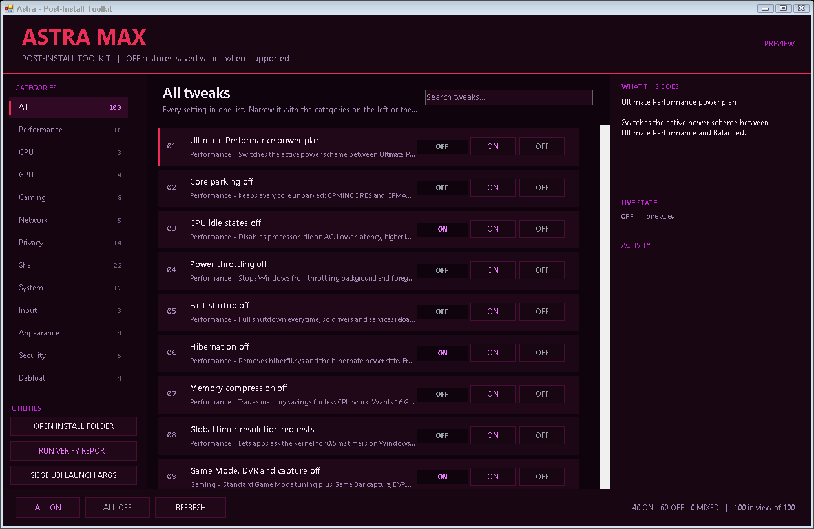

Four presets, no hidden extra
Light, Recommended, Extreme and Insane map to the same visible option pages. Every tweak is a checkbox on a page you can review before anything runs.
AME Wizard Beta playbook · v1.3.6
Astra Max is a 37-page AME Wizard playbook plus a 100-tweak post-install toolkit. Pick a preset, strip the bloat, then control every setting from one app after setup.
E591C71FDB8BF783DE8B896412ABE2164CAD34D470852E8E9059F2DB3FF4C75A

What ships
The wizard handles the install-time layout. The bundled toolkit handles everything after, with a real state check on each row instead of blind toggles.
Light, Recommended, Extreme and Insane map to the same visible option pages. Every tweak is a checkbox on a page you can review before anything runs.
From obvious preinstalled clutter to more aggressive removals. Packages are removed with Remove-AppxPackage; switching the tier OFF does not reinstall them.
Four service sets move background components between Disabled, Manual and Automatic with cache cleanup. ON restores the documented defaults.
Defender and VBS have their own choices and are off by default, with the trade-off stated on the page. A separate hardening page — SmartScreen, LLMNR, AutoRun — is checked by default.
Five documented launch-option profiles — COD HQ/Warzone, Siege, Fortnite, Apex and CS2 — plus abstract wallpapers and a personal live-wallpaper import that stays local.
DirectX June 2010, the Visual C++ 2005–2022 AIO, .NET 3.5 and the .NET Desktop 8 runtime are bundled, so a fresh image does not need to fetch them first.
The control panel
Astra.exe opens after setup with every tweak in one scrollable list. Search by name, filter by category, then apply a single row or a whole group.
The app is unsigned. Windows SmartScreen may warn on first launch; verify the archive hash and keep the app inside the playbook folder.
Current build
One encrypted archive for AME Wizard Beta. Store it somewhere local, verify the hash, then load it into the wizard.
E591C71FDB8BF783DE8B896412ABE2164CAD34D470852E8E9059F2DB3FF4C75A
Get-FileHash .\Astra-1.3.6.apbx -Algorithm SHA256
Install path
Astra Max changes system components. Test on a disposable VM or a fresh image before using it on a daily driver.
Run the hash command above and compare all 64 characters with the value on this page. Do not continue on a mismatch.
Use a Windows 11 ISO on a VM or a freshly reset install. Existing customizations can collide with the playbook's option gating.
Open AME Wizard Beta, load the .apbx and enter malte. Review every page: preset, debloat tier, service tier, security choices.
Launch the post-install toolkit from the install folder, check live state per row and apply only what you need. Reboot when a tweak asks for it.
Straight answers
Astra.exe has no code-signing certificate. SmartScreen can warn, and some antivirus tools may flag a system-tweaking binary. The source and archive hash are public so you can verify before running.
The 1.3.6 toolkit UI was rendered from source and all 100 rows were checked in that render. The bundled app and debloat engine have not been exercised from an AME-injected image in this build.
Defender and VBS options default to disabled and restoring them may require a manual re-enable. Read those pages; the hardening page is a separate, default-on decision.
Debloat tiers uninstall Appx packages. Turning a tier OFF later does not reinstall them. Service tiers may delete cache folders in addition to changing start types.
No BattlEye or EAC bypass, no firmware or clock changes, and no promised FPS number. Game profiles only apply documented per-title launch options.
Imported live wallpapers and personal images are copied locally at runtime and are not included in the published archive.